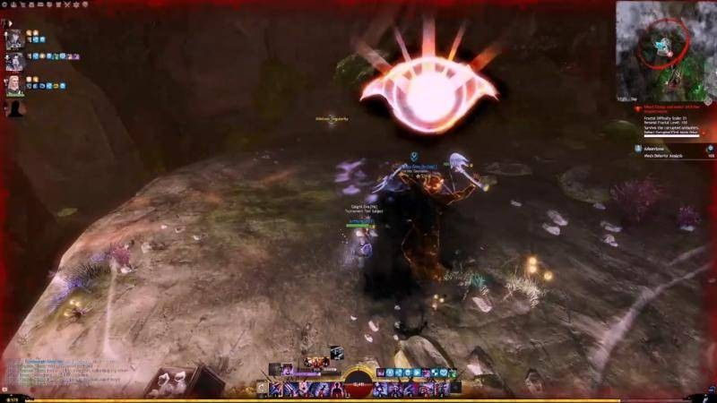
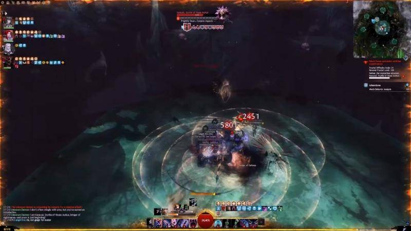
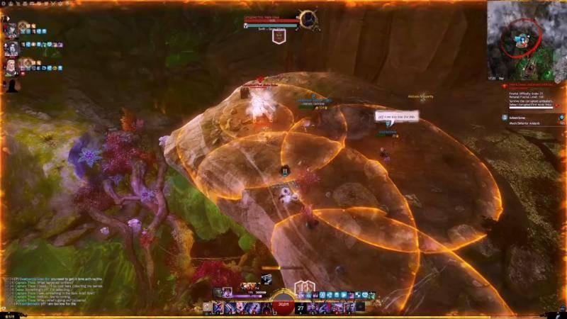
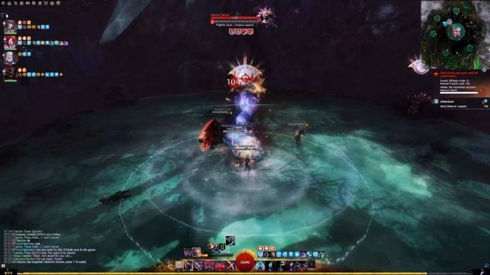
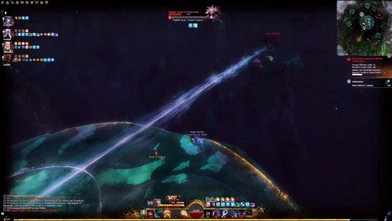

Dread Visage (Auge): wegschauen – Fallen ist im CM Tod
Beim Aufblitzen der Augen hinschauen = Tod oder Fear über den Rand. 100–66 %: alle Aspekte haben Augen → über den Plattformrand hinaus schauen. 66–33 %: Kanaxai porte auf eine Außenplattform → Minimap checken; am sichersten nach Osten schauen. 33–0 %: Antlitz kommt mit Frightening Speed → stillstehen, vom Rand weg schauen.
2
Römische Zahlen: sofort verteilen
Frightening Speed markiert die Dash-Reihenfolge. Start-AoE oder mehrere Treffer = Tod. Vortex anderer Spieler meiden.
3
Dolus (vor dem Boss)
Wirft Captain Thess per Dread Visage runter – wegschauen. Römische Zahlen wie bei Kanaxai: verteilen, Start-Bereich meiden.
4
Boon Steal
Zwei orange Kreise: Ausweichen hilft nicht – rausgehen. Treffer = Boons weg, Buffs für Kanaxai.
5
Breakbars
Über 50 % alle 10 %, darunter alle 5 %. Nicht gebrochen = zusätzlicher Aspekt auf einer Außenplattform → Kanaxai macht viel mehr Schaden.
6
World Cleaver (66 % & 33 %)
Kanaxai tethert Spieler, die Aspekte auf den Außenplattformen töten müssen – sonst Wipe. DPS vorher passend positionieren, mit dem Grappling Hook rüber und sicher zurück.

③ Dolus: Auge – wegschauen② Römische Zahlen: verteilen⑥ World Cleaver: Grappling Hook

② Kanaxai: Speed-Kreise
Details zum Nachschlagen
Eröffnung
Der CM überspringt das Höhlen-Segment und startet direkt vor dem Endkampf. Erst Corrupted Luxon Sailors und Corrupted First Mate Dolus besiegen.
Corrupted First Mate Dolus

Frightening Speed: verteilen
Wirft Captain Thess sofort per Dread Visage von der Plattform – nicht hinschauen, sonst Fear über den Rand (= Tod).
Frightening Speed: Zahlen zeigen die Dash-Reihenfolge. Startbereich wird tödlich, danach bleibt ein Vortex. Verteilen, nicht stacken.
Danach öffnet sich ein Schattenportal zur Plattform mit Kanaxai.
Kanaxai, Scythe of House Aurkus

Dread Visage über Kanaxai

World Cleaver – Tether zur Außenplattform
Dread Visage den ganzen Kampf: helle Augen über Kanaxai und Aspekten. Beim Aufblitzen hinschauen = Tod oder Fear.
100–66 %: alle Aspekte mit Auge → über den Rand schauen. 66–33 %: Kanaxai auf Außenplattform, Minimap – Osten ist am sichersten. 33–0 %: bei Frightening Speed auch Antlitz → stillstehen, vom Rand weg schauen.
Boon Steal: zwei orange Kreise, Ausweichen wirkt nicht.
Breakbar: alle 10 % über 50 %, alle 5 % darunter. Verpasst → Aspekt auf Außenplattform, Kanaxai macht mehr Schaden.
World Cleaver (66/33 %): getetherte Spieler müssen Aspekte auf Außenplattformen töten, sonst Wipe. DPS vorpositionieren, Grappling Hook hin und zurück.
Frightening Speed: sofort verteilen; Startbereich oder Mehrfachtreffer = Tod.
Klassen & Rollen
Daten: GW2 Wingman, Challenge Mode, „Balance Patch November 2026“, Stand 21.11.2026 · Kanaxai: Erfolgsquote 66,1 %, Median-Kill 3:21 min
Am häufigsten gespielt (CM)
Spec
Anteil
Harbinger
21,3 %
Troubadour
10,7 %
Specter
9,2 %
Mechanist
8,5 %
Amalgam
5,6 %
Firebrand
5,3 %
Chronomancer
4,3 %
Virtuoso
3,5 %
Soulbeast
3,4 %
Scourge
3,4 %
Höchster Ø-DPS (CM)
Spec
Ø DPS
Top
Harbinger
22.702
32.300
Antiquary
21.996
28.473
Soulbeast
21.907
28.468
Bladesworn
21.583
27.817
Holosmith
21.323
32.781
Weaver
20.805
27.229
Firebrand
20.611
30.896
Specter
20.253
30.718
Berserker
20.127
25.744
Virtuoso
19.850
28.025
Rollen-Empfehlung (abgeleitet aus Beliebtheit + Ø-DPS)
Rolle
Specs
Warum
DPS sicher & beliebt
Harbinger, Specter, Mechanist, Amalgam
Am häufigsten in erfolgreichen CM-Logs – bewährt für diese Mechaniken.
Große Spanne zwischen Ø und Top-DPS → als Support und als (Boon-)DPS gespielt.
Heal-Support
Troubadour
Ø-DPS unter 3,5k → in CM-Logs praktisch nur als Heiler/Support.
Komp-Tipp: Laut Wingman ist Harbinger hier mit 21 % der klar häufigste DPS, dazu Specter und Mechanist. Wichtig: verlässliche Breakbars und DPS, die den World Cleaver sicher übernehmen.
Klassentipps – worauf du achten musst
Mechanik-Bezug aus dem Hardstuck-Guide; die Klassenhinweise sind allgemeine Spieltipps. Für die neuesten Elite-Specs (z. B. Troubadour, Ritualist, Paragon, Luminary, Conduit, Evoker, Antiquary, Galeshot, Amalgam) gelten v. a. die Klassen-Grundregeln – prüfe die konkreten Skills im aktuellen Build.
Wächter
Firebrand · Luminary · Willbender · Dragonhunter
Firebrand: hoher Ø-DPS und Aegis gegen Dash-Treffer.
Aegis hilft bei Speed-Treffern – nicht bei Boon Steal.
Willbender: Dashes nie Richtung Rand.
Ingenieur
Mechanist · Amalgam · Scrapper · Holosmith
Holosmith: höchster Top-Wert in diesem CM.
Mechanist beliebt – Mech hält Uptime beim Wegschauen.
Hammer-CC für die häufigen Breakbars.
Mesmer
Virtuoso · Chronomancer · Troubadour · Mirage
Viel Burst-CC – wichtig bei Bars alle 5 %.
Portal kann den Cleaver-Weg absichern.
Troubadour: häufigster Heiler.
Elementarmagier
Tempest · Weaver · Catalyst · Evoker
Tempest/Weaver solide DPS.
Lightning Flash: nie Richtung Plattformrand.
Wenig HP → Speed-Treffer vermeiden.
Nekromant
Ritualist · Scourge · Reaper · Harbinger
Harbinger: meistgespielter DPS (21 %) und höchster Ø-DPS.
Blight senkt Max-HP – bei Speed-Kreisen vorsichtig.
Scourge: hoher Ø-DPS und Barrier.
Widergänger
Renegade · Vindicator · Herald · Conduit
Staff 5 / Hammer-CC für die Breakbars.
Vindicator-Sprung-Dodge nicht Richtung Rand.
Renegade/Conduit: solide Optionen.
Krieger
Berserker · Spellbreaker · Bladesworn · Paragon
Bladesworn: Dragon Trigger nicht vor Dread Visage laden.
Hammer/Mace für Breakbars.
Shield Stance gegen gezielte Angriffe.
Waldläufer
Soulbeast · Untamed · Galeshot · Druid
Soulbeast hoher Ø-DPS.
Druid kommt hier sogar als DPS in den Logs vor.
Longbow-Knockback als CC – Richtung beachten.
Dieb
Daredevil · Deadeye · Specter · Antiquary
Specter: sehr beliebt (9 %), hoher Ø-DPS.
Shadowstep kann über den Rand führen – vorsichtig.